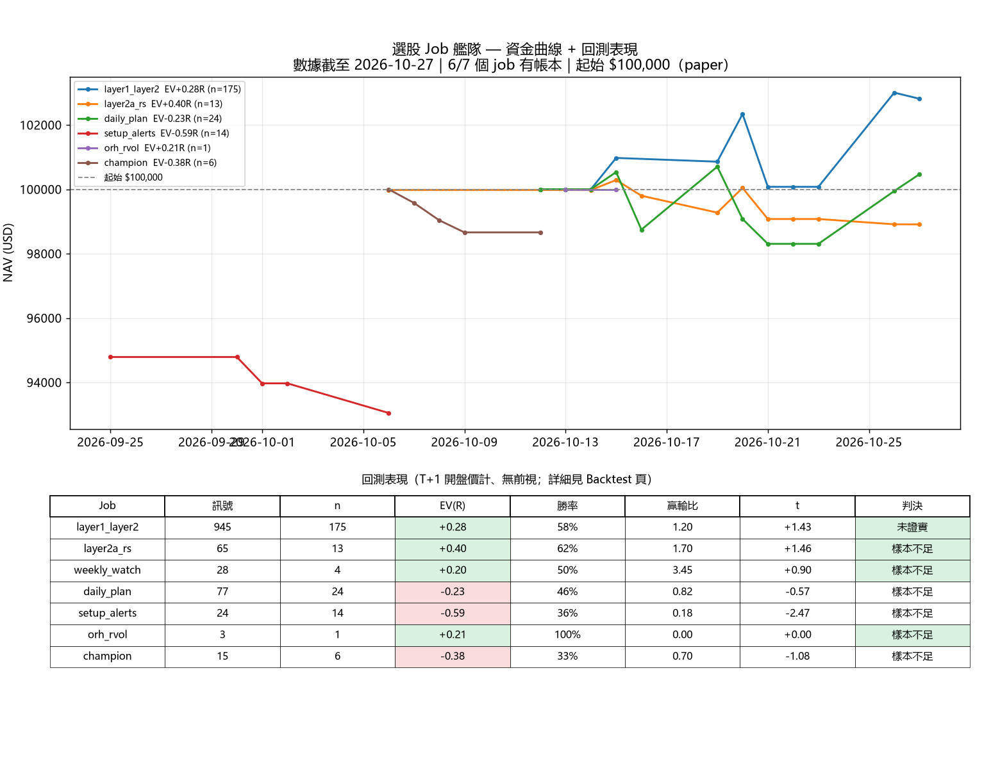

繁體中文版｜骨架蒸餾自 NEL · Market console（逆向工程）｜資料 2026-10-25 11:19

1TDiU6Wt0YYo…｜gid 634720175｜嵌入失敗時請直接開原 Sheet| 日期 | 2026-10-23 |
| 指數燈 | SPY ● QQQ ● IWM ● |
| 站上 20/50/200MA | 72.6% / 60.8% / 59.2% |
| 新高 / 新低 | 253 / 62 |
| 廣度判斷 | 參與度廣 — 突破可靠性高 |
| 領導 | 半導體 SOXX/SPY 相對 60 日 -8.6% — 領導力轉弱 |
| VIX | 恐慌升溫（高於全部均線）= 收細倉位 |
| 資料 | 2026-10-23T18:40:38.432583 |
| 範圍 | S&P500 (503 loaded) |
| Regime | NEUTRAL |
| Posture | FLAT_WATCH |
| 狀態 | WATCH_ONLY |
| 多空比 | 1.96 |
| ADL | 22.8 |
| 新高新低淨值 | 17.8 |
| 站上 40MA | 66.1% |
| SPY 收市 | 763.96 |
| 備註 | 儲住彈藥，等信號：冇符合 Setup C（<=50MA-2ATR）嘅均值回歸候選之前 = WATCH_ONLY |
| 日期 | 10/23/2026 |
| 升 4%+ 家數 | 170 |
| 跌 4%+ 家數 | 199 |
| 升/跌 比 | 0.85 |
| 5 日比率 | 1.12 |
| 10 日比率 | 0.66 |
| 升 25%+ (季) | 711 |
| 跌 25%+ (季) | 1,526 |
| 代號 / 行業 | 收市 | X（21EMA） | Y（ATRX） | ATR 帶 | 買入區 | 疊加 | Kell 階段 | 1CM 評級 |
|---|---|---|---|---|---|---|---|---|
| ASC↗ | 19.34 | +0.38 | +0.97 | ★ 買入區 | 6 | ③ EMA Crossback | C 邊緣 2/5 | |
| CRSR↗ | 13.64 | +0.38 | +1.06 | ★ 買入區 | 6 | ⑥ Wedge Drop | C 邊緣 2/5 | |
| NTRA↗ | 401.37 | +0.29 | +1.80 | ★ 買入區 | 5 | ③ EMA Crossback | A 強 4/5 | |
| TEN↗ | 51.65 | +0.40 | +1.78 | ★ 買入區 | 5 | ③ EMA Crossback | B 觀察 3/5 | |
| HELE↗ | 28.96 | +0.45 | +0.45 | ★ 買入區 | 5 | ② Wedge Pop | B 觀察 3/5 | |
| ESTC↗ | 98.21 | +1.04 | +1.92 | — | 5 | ② Wedge Pop | B 觀察 3/5 | |
| QLYS↗ | 208.20 | +1.61 | +2.29 | — | 5 | ② Wedge Pop | C 邊緣 2/5 | |
| CRL↗ | 339.66 | +2.21 | +3.05 | — | 5 | ③ EMA Crossback | A 強 4/5 | |
| CDNA↗ | 69.16 | +1.06 | +2.71 | — | 4 | ③ EMA Crossback | A 強 4/5 | |
| GCT↗ | 59.12 | +1.09 | +2.37 | — | 4 | ② Wedge Pop | C 邊緣 2/5 | |
| PARR↗ | 80.18 | -0.74 | -0.32 | — | 3 | ⑥ Wedge Drop | D 唔算 1/5 |